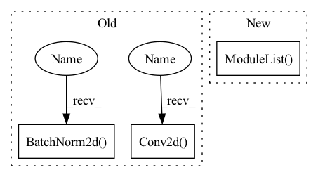

Pattern ID :1825
Before Change
nn.BatchNorm2d(hidden_dim),
nn.ReLU(inplace=False),
// dw
nn.Conv2d( hidden_dim, hidden_dim, 3, 1, 1, groups=hidden_dim, bias=False) ,
nn.BatchNorm2d( hidden_dim) ,
nn.ReLU(inplace=False),
// pw-linear
nn.Conv2d(hidden_dim, oup, 1, 1, 0, bias=False),
After Change
nn.BatchNorm2d(oup),
)
self.conv2 = torch.nn.ModuleList()
for i in range(n):
self.conv2.append(IRBlock(oup, hidden_dim))
In pattern: SUPERPATTERN
Frequency: 3
Non-data size: 3
Instances Fragment ID: 4573253
Project Name: fire717/movenet.pytorch
Commit Name: 6eb59cd47bfde753530ed236335910bed9ba7c1d
Time: 2022-08-12
Author: fire15@126.com
File Name: lib/models/movenet_mobilenetv2.py
M Class Name: InvertedResidual
N Class Name: InvertedResidual
M Method Name: __init__(6)
N Method Name: __init__(6)
M Parent Class: nn.Module
N Parent Class: nn.Module
M File Name: lib/models/movenet_mobilenetv2.py
N File Name: lib/models/movenet_mobilenetv2.py
M Start Line: 83
M End Line: 113
N Start Line: 98
N End Line: 120
Before Change
self.conv2 = nn.Sequential(
// pw
nn.Conv2d( oup, hidden_dim, 1, 1, 0, bias=False) ,
nn.BatchNorm2d(hidden_dim),
nn.ReLU(inplace=False),
// dw
nn.Conv2d(hidden_dim, hidden_dim, 3, 1, 1, groups=hidden_dim, bias=False),
nn.BatchNorm2d( hidden_dim) ,
nn.ReLU(inplace=False),
// pw-linear
nn.Conv2d(hidden_dim, oup, 1, 1, 0, bias=False),
After Change
nn.BatchNorm2d(oup),
)
self.conv2 = torch.nn.ModuleList()
for i in range(n):
self.conv2.append(IRBlock(oup, hidden_dim))
Fragment ID: 4573252
Project Name: fire717/movenet.pytorch
Commit Name: 6eb59cd47bfde753530ed236335910bed9ba7c1d
Time: 2022-08-12
Author: fire15@126.com
File Name: lib/models/movenet_mobilenetv2.py
M Class Name: InvertedResidual
N Class Name: InvertedResidual
M Method Name: __init__(6)
N Method Name: __init__(6)
M Parent Class: nn.Module
N Parent Class: nn.Module
M File Name: lib/models/movenet_mobilenetv2.py
N File Name: lib/models/movenet_mobilenetv2.py
M Start Line: 83
M End Line: 113
N Start Line: 98
N End Line: 120
Before Change
def __init__(self,ch_in,ch_out):
super(conv_block,self).__init__()
self.conv = nn.Sequential(
nn.Conv2d( ch_in, ch_out, kernel_size=3,stride=1,padding=1,bias=True) ,
nn.BatchNorm2d( ch_out) ,
nn.ReLU(inplace=True),
nn.Conv2d(ch_out, ch_out, kernel_size=3,stride=1,padding=1,bias=True),
nn.BatchNorm2d(ch_out),After Change
nn.Upsample(scale_factor=2),
nn.Conv2d(in_channels, out_channels, 3, 1, 1)
)
self.resblocks = nn.ModuleList( [ResNetBlock(in_channels, num_groups, skip_connection_scale, swish, skip_path=skip_path) for i in range(numResNetBlocks)])
def forward(self, x):
for resblock in self.resblocks:
x = resblock(x) Fragment ID: 4573249
Project Name: atharvbhat/plus-ultra
Commit Name: 03d62302ad59610a32dfa219ac961dd52def9352
Time: 2022-05-30
Author: bhat.atharv@gmail.com
File Name: model.py
M Class Name: conv_block
N Class Name: UBlock
M Method Name: __init__(8)
N Method Name: __init__(3)
M Parent Class: nn.Module
N Parent Class: nn.Module
M File Name: model.py
N File Name: model.py
M Start Line: 32
M End Line: 41
N Start Line: 61
N End Line: 67
Before Change
self.use_batch_norm = use_batch_norm
n_channels = observation_shape[0]
self.conv1 = nn.Conv2d( n_channels, 32, kernel_size=8, stride=4)
self.conv2 = nn.Conv2d(32, 64, kernel_size=4, stride=2)
self.conv3 = nn.Conv2d(64, 64, kernel_size=3, stride=1)
if use_batch_norm:
self.bn1 = nn.BatchNorm2d(32)
self.bn2 = nn.BatchNorm2d( 64)
self.bn3 = nn.BatchNorm2d(64)
self.bn4 = nn.BatchNorm1d(512)
self.fc = nn.Linear(self._get_linear_input_size(), 512)After Change
// convolutional layers
in_channels = [observation_shape[0]] + [f[0] for f in filters[:-1]]
self.convs = nn.ModuleList()
self.conv_bns = nn.ModuleList()
for in_channel, f in zip(in_channels, filters):
out_channel, kernel_size, stride = f
conv = nn.Conv2d(in_channel,
out_channel, Fragment ID: 4573248
Project Name: takuseno/d3rlpy
Commit Name: 557b11a8d5cf75edfc0a2928399d5192d1757ddb
Time: 2020-06-16
Author: takuma.seno@gmail.com
File Name: skbrl/models/torch/heads.py
M Class Name: PixelHead
N Class Name: PixelHead
M Method Name: __init__(5)
N Method Name: __init__(3)
M Parent Class: nn.Module
N Parent Class: nn.Module
M File Name: skbrl/models/torch/heads.py
N File Name: skbrl/models/torch/heads.py
M Start Line: 11
M End Line: 22
N Start Line: 8
N End Line: 43